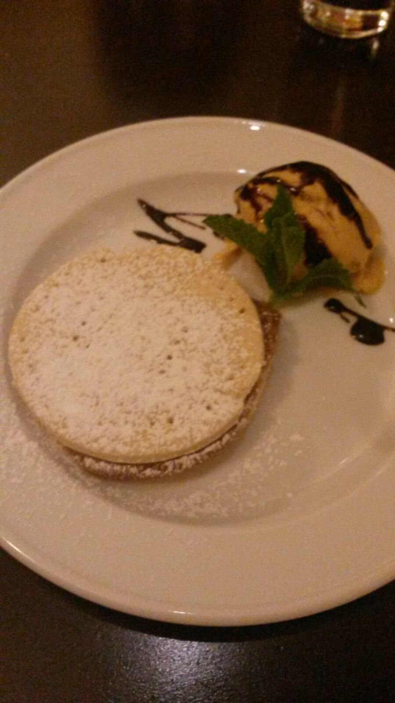

Gastautor*In .
Schreibt über: #GastautorIn #Gesellschaft #halloFFM
Im Nordend hat das „Miraflores“ aufgemacht
In der Neuhofstraße, unweit des beliebten Matthias-Beltz-Platzes und des „Gudes Wasserhäuschens“, hat vor kurzem das peruanische Restaurant ‚Miraflores‘ aufgemacht. Super, dachte ich mir, von peruanischer Küche hast Du keine Ahnung (die essen Meerschweinchen, glaube ich?): Also muss ich das mal ausprobieren. Gedacht, getan, fleischverzehrende Freundinnen für die Repräsentativität eingeladen (ich selbst esse kein Fleisch) und vorbeigeschaut. Ich will nun kurz darüber berichten und Euch hoffentlich Appetit machen, denn, soviel sei schon jetzt verraten, es lohnt sich!
Beginnen wir mit der Einrichtung: Das Lokal ist mit hellen Fließen ausgelegt, die Tische sind aus dunklem Holz (für vier bis sechs Personen, so ich das richtig gesehen habe); in der einen Ecke steht ein einladendes Sofa. Dominiert wird der Raum, der sehr offen ist und sich die Tische demnach nicht drängeln, von der großen Bar, an der man auch bequem sitzen und essen kann. Insgesamt ist es sehr angenehm, auch aufgrund der kleinen Details: so kann man beispielsweise in peruanischen Reiseführern schmökern, wenn einem danach ist. Die beiden Jungs, die uns bedienten, waren ungemein freundlich, sehr gut informiert und stets aufmerksam. Sie verstanden es wunderbar, uns die peruanischen Speisen zu erläutern, was vor allem für die Tageskarte unverzichtbar war. Hier ein großes Lob!
Kommen wir nun aber zum Wesentlichen des Abends: dem Essen. Wie schon erwähnt gibt es ein stetiges Menü mit Klassikern und Interpretationen der peruanischen Küche, welches Ihr hier nachlesen könnt. Dazu gibt es eine kleine, aber feine Tageskarte, die gestern vier Gerichte (drei Haupt- und eine Nachspeise) enthielt. Wir entschieden uns – mehr oder weniger zufällig – für verschiedene Gerichte, so dass wir einen guten Eindruck des Angebots bekamen. Als Aperitif bestellten wir schwarze und grüne Oliven sowie gerösteten Andenmais. Die Oliven waren nicht weiter der Rede wert; der Mais schmeckte aber uns allen sehr gut.Als ersten Gang kamen dann die Cerviche de Pescado und die Yuccas a la Huancaina (frittierte Yucca-Stäbchen mit Chilli-Käse-Soße) an den Tisch. Die Cerviche bestach dabei durch hervorragend präparierten Fisch und eine famose Soße, die wunderbar zu den Gemüsebeilagen und dem Fisch passte. Die Yuccas fanden hingegen geteiltes Echo. Während einige von uns sie unspektakulär fanden, würde ich diese sofort gegen jede Art von Süßkartoffelgedöns im Burgerladen eintauschen: knusprig frittiert, sehr angenehmer Eigengeschmack, leckere Soße (Chilli-Käse-Soße). Der Start war auf jeden Fall vielversprechend, so dass wir uns auf die weiteren Speisen umso mehr freuten.

Kurz nach dem ersten Gang kamen die „Hauptgerichte“ zu uns. Dabei hatte ich mit der Causa Vegetariana das einzige vegetarische Hauptgericht bestellt. Weiterhin fanden drei Gerichte der Tageskarte den Weg zu uns: Da waren zum Einen die mit Rinderhackfleisch gefüllte, mit Käse überbackene und auf einem Kartoffelgratinbett liegende peruanische Chilli (leicht scharf), des Weiteren in Chilli und Koriander mariniertes Rindfleisch mit Gemüsebeilage und zuletzt ein mit Quinoa bestreutes, scharf angebratenes Thunfischsteak mit Garnelen in einer Art Teriyaki-Soße mit Reis. Ein eigenes Urteil konnte ich mir nur über mein Gericht bilden: die kalte Causa Vegetariana lässt sich am besten als aufgetürmte Mischung verschiedener Bestandteile beschreiben. Feiner Kartoffelstampf als Basis, dann eine Avocado-Frischkäse-Mischung (ob es wirklich Frischkäse war, mag ich nicht beschwören), wieder Kartoffelstampf, dann ein Topping aus leicht scharfem rote Beete-Salat (so schmeckte es zumindest) und gerösteten Zwiebeln. Das mag etwas ungewohnt klingen, war aber in der Kombination ganz wunderbar und zerging förmlich auf der Zunge (Achtung, Restaurantkritikerphrase!). Die anderen Gerichte fanden ebenfalls großen Anklang, wobei die Chilli mit etwas Abstrichen wegkam. Besonders gelobt wurden vor allem die Soßen sowie der Thunfisch.
Zuletzt konnten wir dann doch nicht widerstehen und orderten noch Nachtisch: Alfajor con helado, Suspiro a la Limena (traditioneller peruanischer Nachtisch aus Karamelcreme gekrönt mit einem leichten likörhaltigen Eischaum) und ein Kuchen des Tages (ich glaube der war mit Mango). Ich bin ja nicht so der Nachtischfreund, insofern kann ich hier nur sagen, dass das Eis, welches es zum Keks gab, ganz wunderbar schmeckte und in Verbindung mit dem Keks ob seines leichten Kaffeegeschmacks den Espresso nicht vermissen ließ. Die Karamellcreme hingegen war nicht mein Fall, wurde aber von meiner Begleitung gerne gegessen.

Was fehlt noch? Vielleicht ein Wort zum Wein: Die beiden uns empfohlenen Weine (ein roter Peruaner und ein Weißer) passten außerordentlich gut zum Essen und waren auch nicht überteuert. Ebenso schlägt die Flasche Wasser mit 4 Euro nicht zu sehr in den Geldbeutel (da zahl man in vielen Ebbelwoi-Schenken mehr!). Insgesamt ist das ‚Miraflores‘ allerdings nicht als günstig zu bezeichnen: für die kleineren Portionen (die hier Piqueos heißen und größeren Tapas entsprechen) zahlt man zwischen 5 und 10 Euro, für die größeren Portionen (Racion) auch schon mal bis zu 18 Euro. Ein Preis, der aber ob der gebotenen Qualität und der sehr netten und freundlichen Bedienung aber voll in Ordnung geht. Ich empfehle das ‚Miraflores‘ also gerne weiter – auch wenn das Angebot für Vegetarier vielleicht nicht groß genug ist, um mich öfter zu sich zu locken.
TL;DR: Das neue peruanische Restaurant ‚Miraflores‘ im Nordend kann mit Qualität und Service zu einem leicht gehobenen Preis sehr überzeugen. Für Nicht-Vegetarier spannende Gerichte und „mal was anderes“.
Vielen Dank an unseren Gastautoren Stefan Wender. Ihr findet ihn auf Twitter unter dem Namen @bembelguy und dort schreibt er über "Sports, Politics, quality TV | Schobbe, Pasta, Vegetarianism | Theory, Practice, Synthesis". Folgen lohnt sich.

Schreibt über: #GastautorIn #Gesellschaft #halloFFM
Ersten Kommentar schreiben